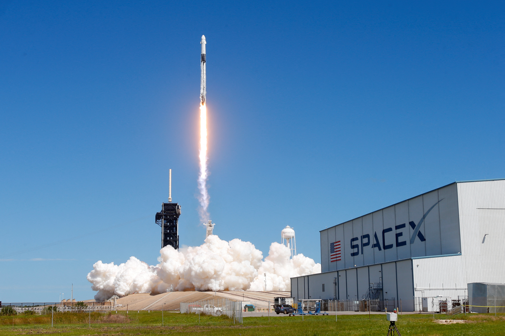
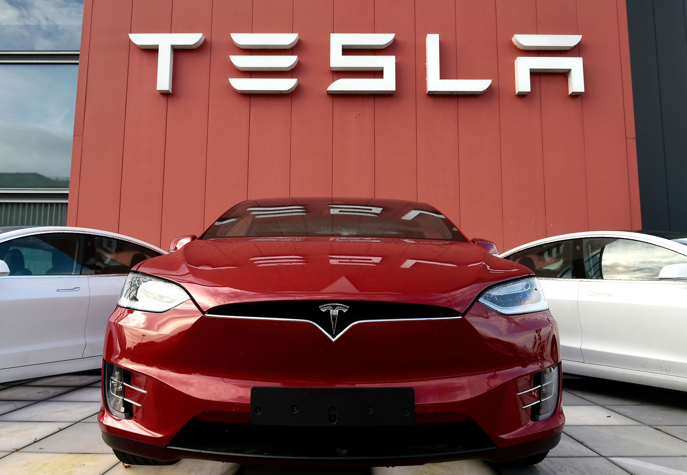
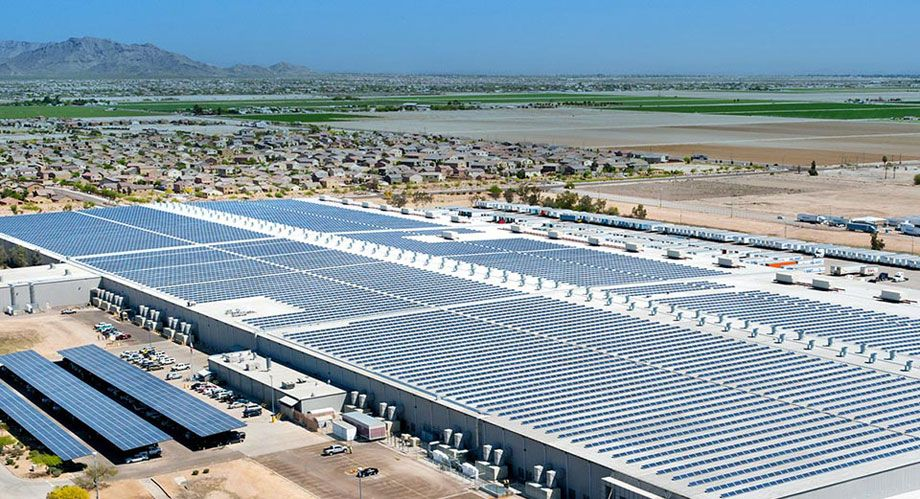

Biografía de Elon Musk
Elon Musk, el enigmático visionario sudafricano que ha revolucionado la industria tecnológica y aeroespacial, es sin duda uno de los personajes más fascinantes de nuestro tiempo. Conocido por ser el fundador de empresas como Tesla, SpaceX y PayPal, Musk ha logrado cambiar el mundo a través de su insaciable sed de innovación y su determinación inquebrantable. La vida de Elon Musk es como algo sacado de una película de ciencia ficción. Nacido en Pretoria, Sudáfrica, en 1971, Musk mostró desde joven un talento extraordinario para la tecnología y la ciencia. A la edad de 12 años ya estaba construyendo su propio videojuego y a los 17 años se mudó a Canadá para estudiar en la Universidad de Queen's. Posteriormente se trasladó a Estados Unidos, donde obtuvo una doble licenciatura en Física y Economía en la Universidad de Pensilvania. Pero fue en el mundo de los negocios donde Musk realmente brilló. A los 24 años cofundó Zip2, una empresa de software que fue adquirida por Compaq por más de 300 millones de dólares. Con el dinero obtenido de esta venta, Musk decidió fundar X.com, una empresa de servicios financieros en línea que eventualmente se convertiría en PayPal. La venta de PayPal a eBay en 2002 le reportó a Musk una fortuna que le permitiría financiar sus futuras ambiciones. Pero Musk no se conformaba con ser solo otro multimillonario de Silicon Valley. En 2004 fundó SpaceX con el objetivo de hacer accesibles los viajes espaciales para la humanidad. A pesar de las múltiples dudas y críticas que recibió en sus inicios, Musk persistió en su visión y en 2008 SpaceX lanzó con éxito su primera nave espacial, convirtiéndose en la primera empresa privada en llegar a la Estación Espacial Internacional. Pero el verdadero hito de Musk llegó en 2008, cuando fundó Tesla Motors con el objetivo de acelerar la transición hacia un futuro sostenible y libre de emisiones de carbono. A pesar de las numerosas dificultades y desafíos que enfrentó, Musk logró convertir a Tesla en un líder mundial en la fabricación de vehículos eléctricos, demostrando que la tecnología limpia y sostenible puede ser rentable y competitiva en el mercado. Pero la vida de Musk no ha estado exenta de controversias y críticas. Su estilo de liderazgo autoritario y su carácter impredecible han generado tensiones dentro de sus empresas y ha sido objeto de críticas por parte de algunos empleados y analistas. Además, su imprudente uso de las redes sociales y sus polémicas declaraciones públicas han generado titulares y memes en todo el mundo. A pesar de todo, Elon Musk sigue siendo uno de los empresarios más exitosos y admirados de nuestro tiempo. Su capacidad para desafiar el status quo, su audacia para abordar problemas aparentemente insolubles y su visión futurista lo convierten en un verdadero pionero y visionario. A través de sus empresas, Musk está impulsando la exploración del espacio, acelerando la transición hacia una economía sostenible y electrificando el transporte terrestre. En conclusión, la vida de Elon Musk es un ejemplo de determinación, audacia y visión. Su capacidad para pensar en grande, arriesgarse e innovar ha cambiado para siempre la forma en que concebimos el futuro. Musk nos recuerda que el avance tecnológico y científico no solo es posible, sino necesario para abordar los desafíos que enfrenta la humanidad en el siglo XXI. Como él mismo ha dicho: "Si algo es lo suficientemente importante, deberías hacerlo aunque las probabilidades no estén a tu favor". Y Musk lo ha hecho, una y otra vez, demostrando que el futuro pertenece a aquellos que se atreven a soñar en grande.
Inventos de Elon Musk
SpaceX
SpaceX es una empresa fundada por Elon Musk en 2002 con el objetivo de revolucionar la industria aeroespacial y llevar a los seres humanos a Marte. Desde su creación, SpaceX ha destacado por su enfoque en la innovación tecnológica y la reducción de costos en el lanzamiento de cohetes al espacio. Una de las señas de identidad de SpaceX es su uso de cohetes reutilizables, una tecnología que permite reducir significativamente los costos de los lanzamientos espaciales. Además, la empresa ha desarrollado el Falcon 9, un cohete capaz de transportar cargas pesadas al espacio con una alta eficiencia.
Tesla
Tesla, la empresa de Elon Musk, es líder en la fabricación de vehículos eléctricos y tecnología relacionada con la energía sostenible. Musk fundó Tesla en 2003 con la visión de acelerar la transición hacia un transporte más limpio y sostenible. Desde entonces, la compañía ha lanzado varios modelos de autos eléctricos que han recibido elogios por su rendimiento, diseño y tecnología innovadora. Además de los autos eléctricos, Tesla también ha incursionado en la fabricación de baterías, paneles solares y sistemas de almacenamiento de energía.
SolarCity
SolarCity fue una empresa fundada por los hermanos Peter y Lyndon Rive en 2006, con el objetivo de promover el uso de la energía solar a nivel residencial. En 2016, la empresa fue adquirida por Tesla, liderada por Elon Musk, con la idea de integrar soluciones de energía renovable en los hogares, como la instalación de paneles solares y baterías de almacenamiento de energía. Bajo el liderazgo de Musk, SolarCity se convirtió en una de las empresas líderes en el mercado de energía solar en Estados Unidos. Sin embargo, enfrentó desafíos financieros y críticas sobre su modelo de negocio, que incluía arrendar los paneles solares a los clientes en lugar de venderlos directamente.